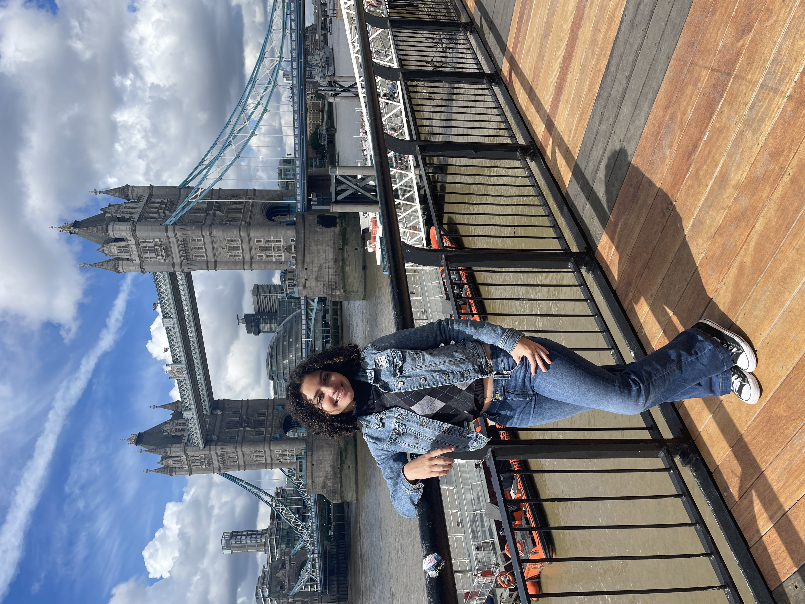
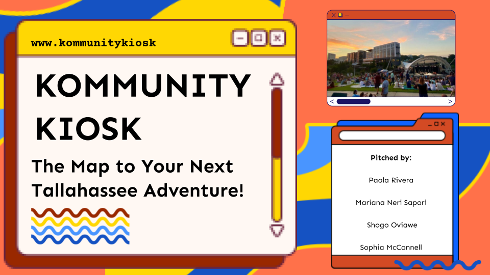

Hi, my name is
IT Student
Hi, my name is Mariana. I'm an Information Technology student at Florida State University who is passionate about building web projects and digital solutions. I enjoy turning ideas into functional prototypes, collaborating with teams, and experimenting with emerging technologies including AI-driven tools, such as Claude Code (my personal favorite at the moment!) to build interactive websites. Every project is an opportunity to combine design, code, and creativity to solve real problems and make technology more engaging.
View My Work
This section is ready for you to fill in with more details about your background, skills, interests, and goals. Share what drives you and what makes you unique.
Florida State University, Tallahassee, FL
Leading social media strategy for three university-affiliated Instagram accounts as part of the IT Leadership Program. Creating content and analyzing engagement metrics.
Dr. Priti Kothari's Office, Parkland, FL
Assisted with patient paperwork and observed clinical interactions. Wrote blog content for a psychiatry practice.
Code Ninjas, Parkland, FL
Taught children coding and problem-solving skills. Guided students through projects and explained computer science concepts.
Brazilian Student Association, Florida State University
Active member planning cultural events and fostering community engagement.
Marjory Stoneman Douglas High School
Wrote articles, took photos, and sold ads raising over $1,000. Earned an FSPA honorable mention.
Parkland Library
Organized community events including Black History Month displays and Summer Reading programs.
Montes Claros, Brazil
Volunteered in occupational safety and participated in therapy groups.

An interactive digital kiosk prototype for Tallahassee bus stops, built at the 2026 Create-a-Thon with HTML, CSS, JavaScript, and Leaflet.js. Features a live clock and date via the JavaScript Date API, live weather from Open-Meteo, real Tallahassee events sourced from talgov.com and tallahassee.com, and real nearby places sourced from Google Maps and local business sites. Bus routes are displayed on an OpenStreetMap/Leaflet map, modeled after StarMetro (conceptual, not live GTFS data).
More to come...
I'm always open to new opportunities, collaborations, or just a friendly chat. Feel free to reach out!
Say Hellowelcome to
click anywhere to enter